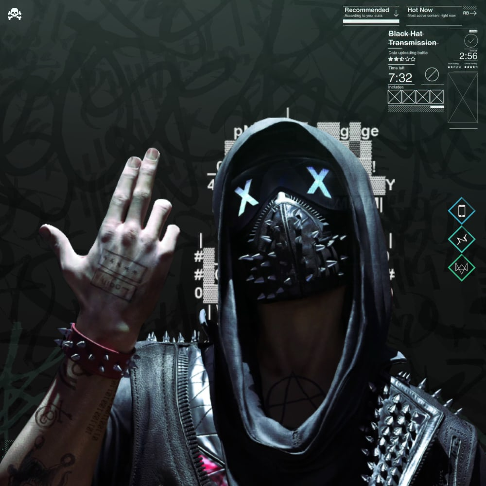
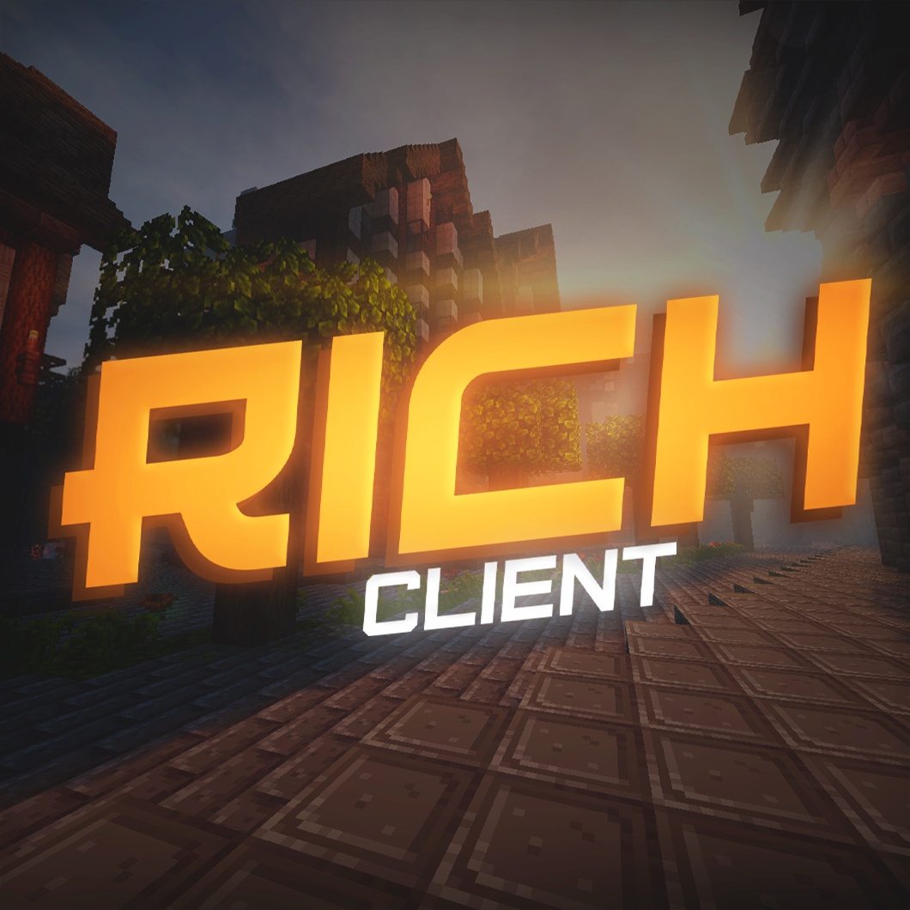
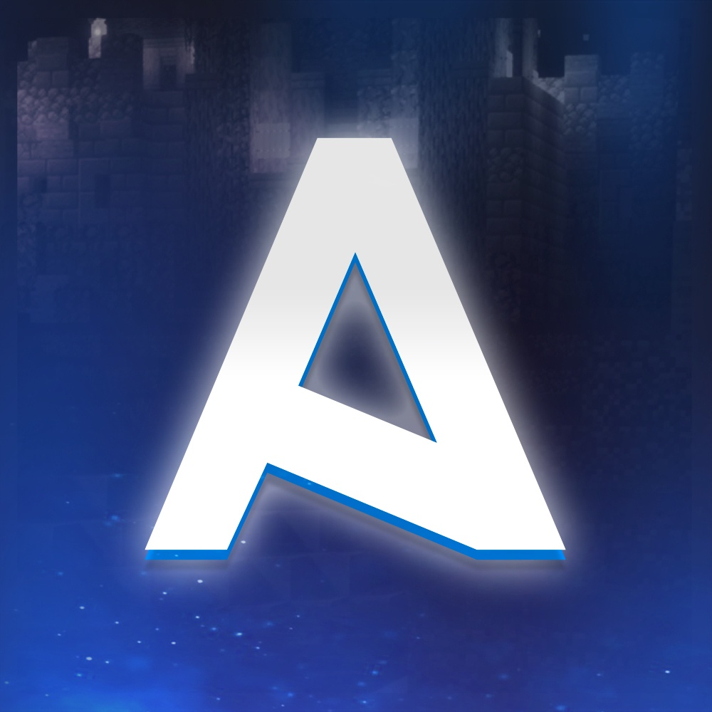
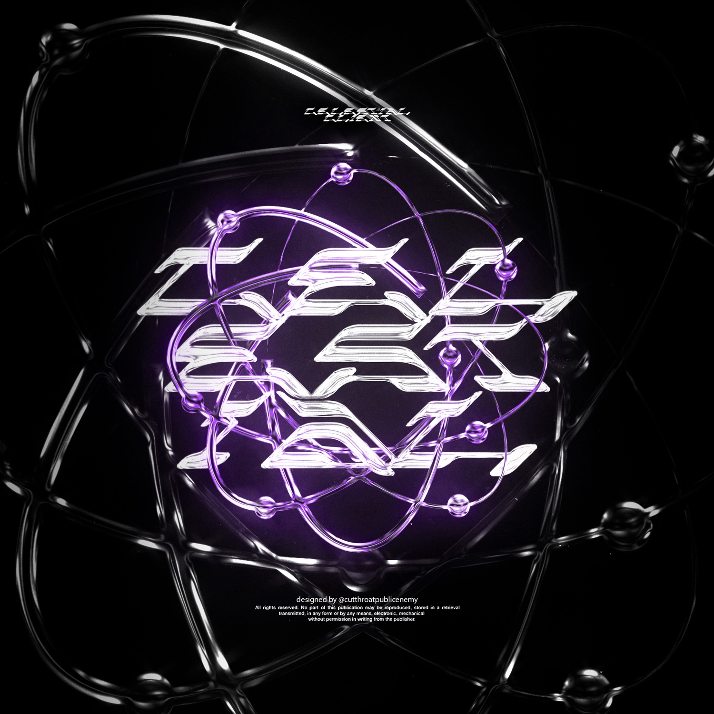
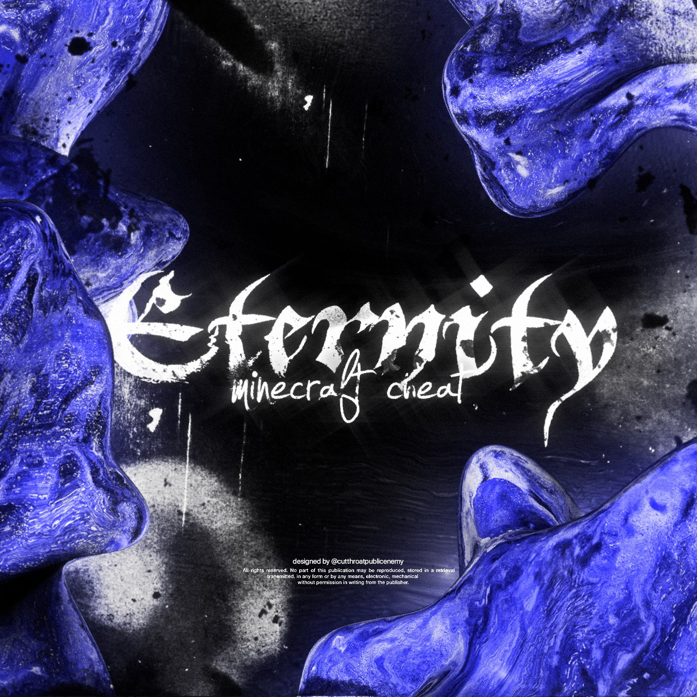
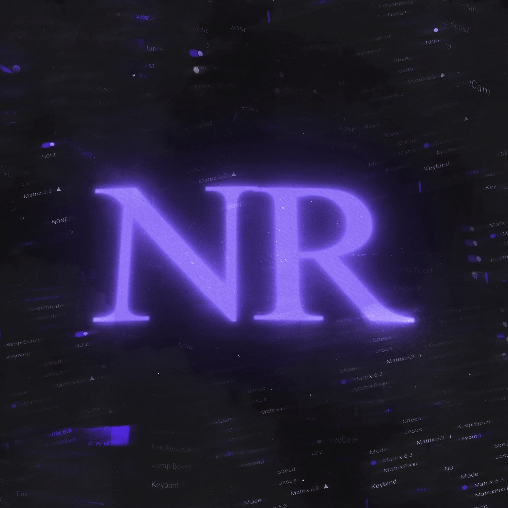

LEGIT и RAGE чит на Minecraft 1.12.2. Обходит все популярные сервера: WellMore, NexusGrief, SunRise, CraftYou, MineTrust, ReallyWorld, VimeMC, BlocksMC и все остальные! Огромное количество обходов и частые обновления.
PukCode

PukCode - Лучший приватный чит для игры в Minecraft. В софте представлен обширный функционал, который обновляется и дополняется.
Чит предназначен для любого типа игры как PVP так и PVE.
В Чите множество обходов на различные анти-читы по типу: NCP, AAC, MATRIX, GUARDIAN.
PukSide
PukSide - чит для Minecraft 1.12.2
RichClient

Лучший чит для майнкрафт
Akrien

Akrien — HVH/LEGIT чит для майнкрафт с обходом всех популярных на сегодняшний день серверов SunRise, WellMore, MST, JetMine и другие.
Имеет в себе всё нужное для комфортной игры.
Puklestial

Софт для майнкрафт 1.12.2
Eternity

Eternity - Новый приватный чит-клиент для Minecraft. Чит-клиент отлично подойдет как для мини-игр, так и для серверов с выживанием. В чите представлен огромный функционал, который при правильной настройке, сможет обойти практически любой анти-чит.
Zamorozka
Zamorozka - Твой Холодный Друг.
NoRules

NoRules - client – чит для майнкрафта, который имеет 3 разных версии.
Rage/Legit-Inject/Free:
–Частые обновления.
–Большое кол-во обходов.
–Бинды на функции.
–Кастом Gui и Hud.
–Надежный spammer.
–Преимущество среди обычных юзеров.
–Exe/launcher версия.